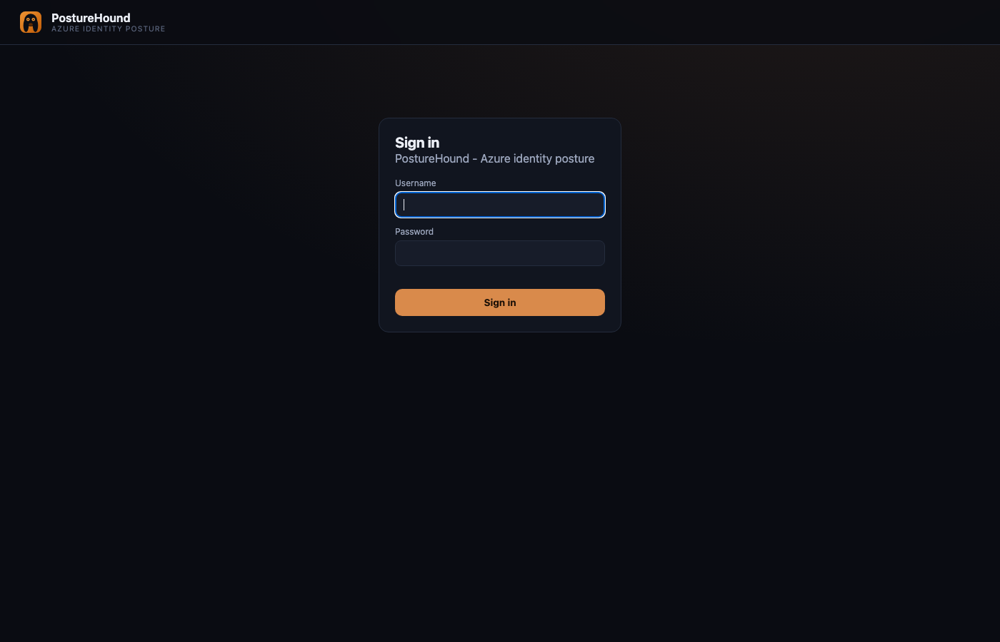
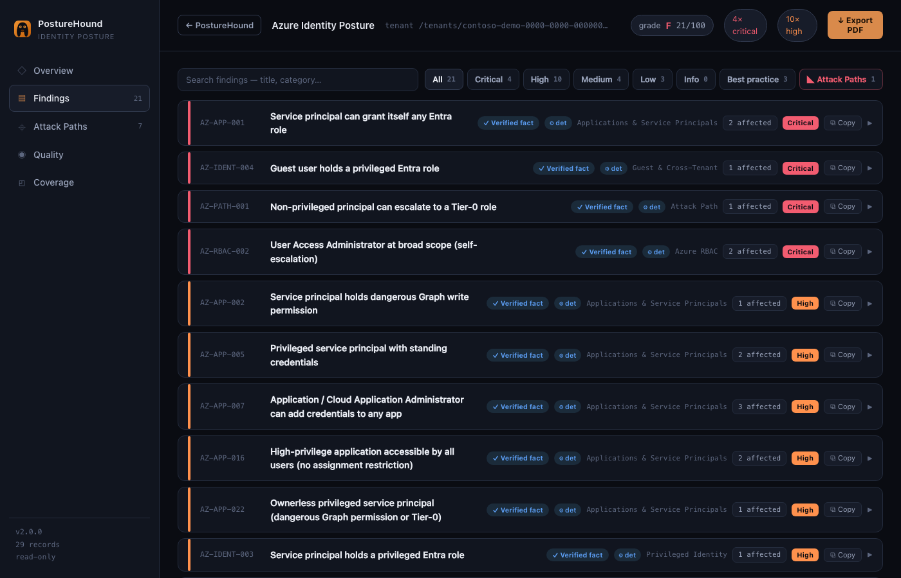
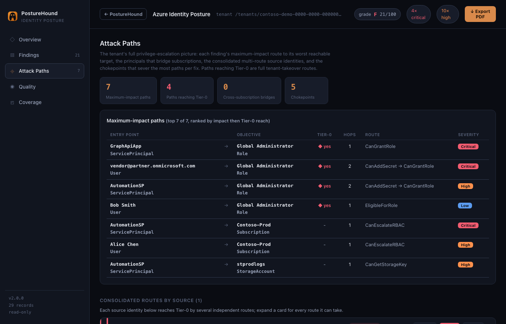
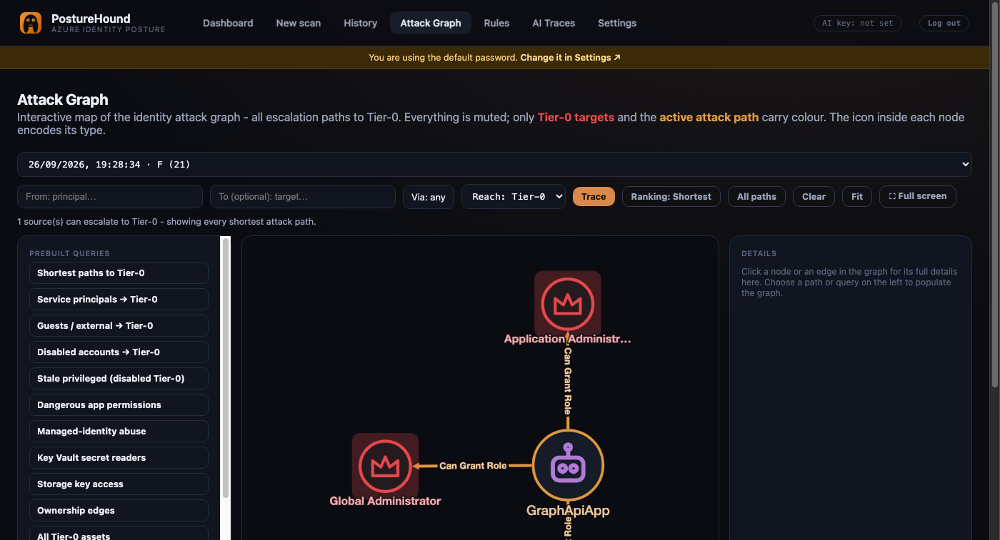
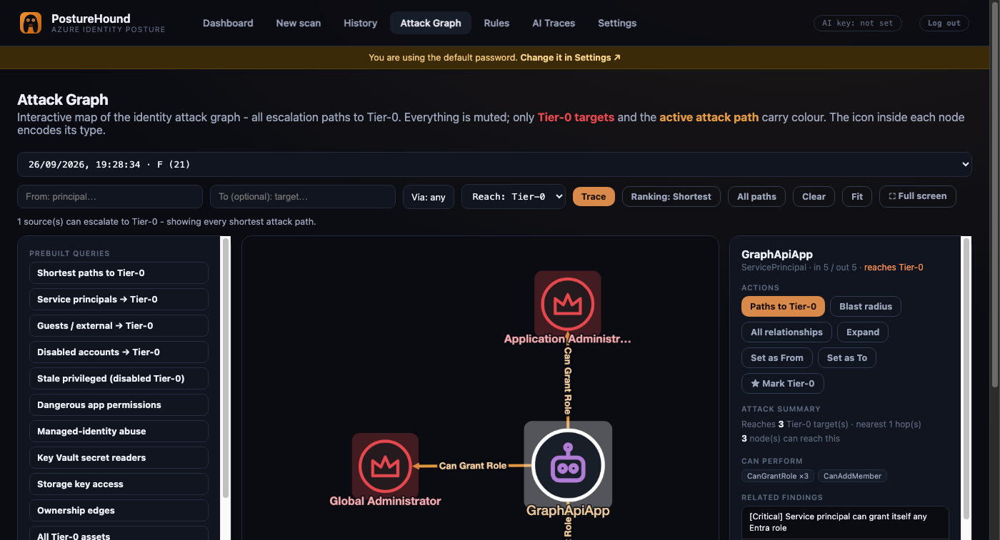
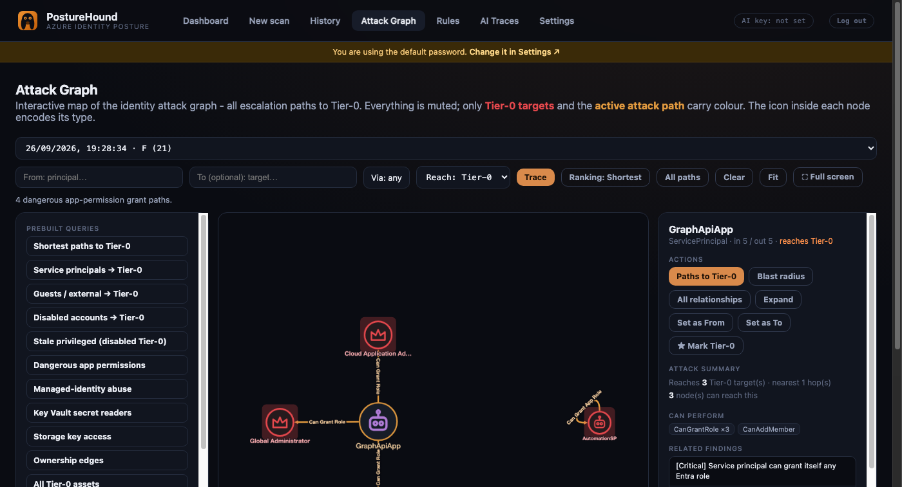
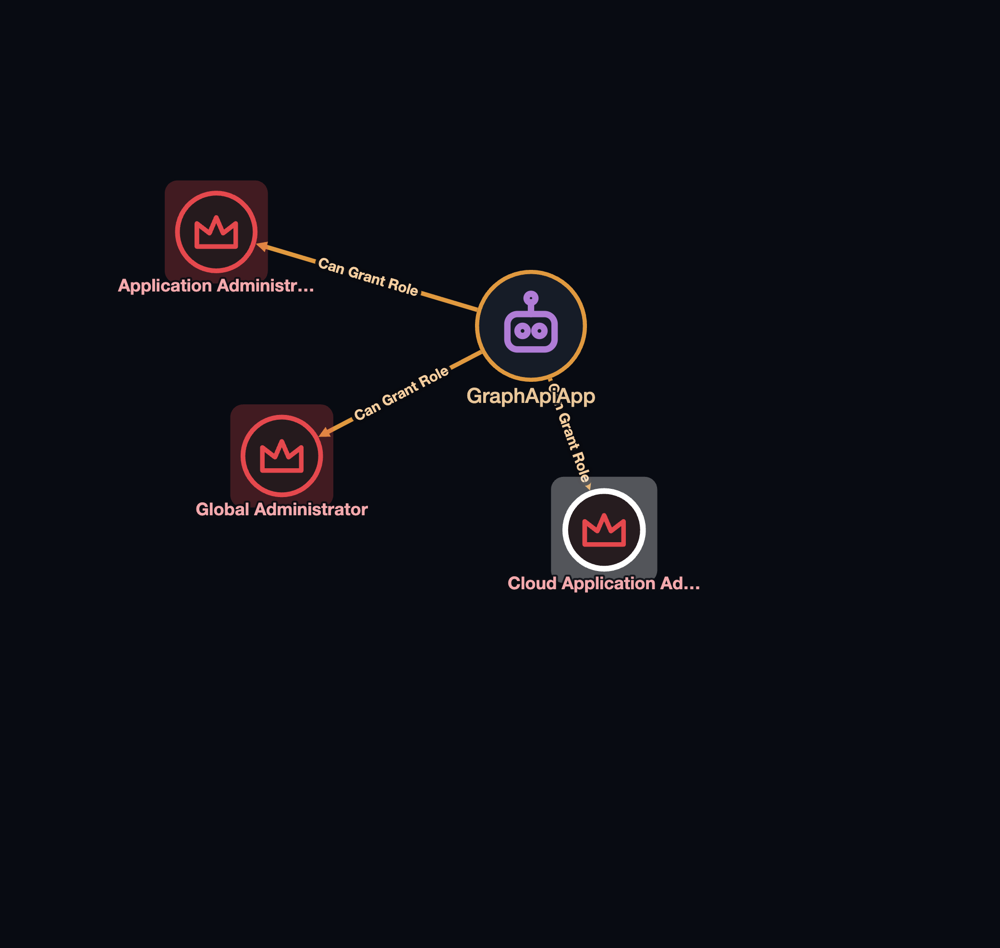

Find the path to Tier-0 before an attacker does.
PostureHound ingests your Azure identity graph and shows exactly how a low-privileged principal can escalate to tenant-critical control - as graded findings, framework-mapped, on a native attack graph. This guide takes you from a clean machine to your first scan.
01 What it is
One tool, three lenses on the same graph.
PostureHound reads an AzureHound collection (or pulls the graph live with a read-only service principal) and assesses it three ways at once:
Deterministic rules
145 always-on rules across identity, apps, RBAC, Key Vault, storage, compute, and tenant governance - mapped to MITRE ATT&CK, Azure Threat Matrix, and CIS.
AI analyst pipeline
Optional. 17 domain specialists plus a cross-domain synthesizer and an adversarial skeptic turn raw facts into compound, verified findings.
Native attack graph
Every escalation edge - ownership, RBAC, managed-identity theft, PIM - rendered as an interactive graph you can trace from any principal to Tier-0.
It never changes anything in Azure. The only input is a data file processed in memory (or read-only API calls in live mode), and the whole app runs on your own machine.
02 Prerequisites
Pick the Docker path (recommended) or the Python path.
- Docker Desktop (recommended) - or Python 3.11+ if you run it directly.
- Data to scan, either:
- an AzureHound collection (
*.jsonor a.zip) - see the AzureHound collector, or - a read-only Azure service principal for live collection (Reader +
Policy.Read.All) - setup indocs/AZURE_SP_SETUP.md.
- an AzureHound collection (
- Optional: an Anthropic API key to enable the AI analyst pipeline. Everything except AI findings works without it.
03 Quick start (Docker)
From zero to the dashboard in about a minute.
-
Unpack & enter the project
unzip posturehound.zip # or: git clone <your-repo> cd posturehound -
Create your environment file
Copy the template - it documents every setting. You do not need to fill anything in to start.
cp .env.example .env
Then set a signing secret so sessions survive restarts (recommended):
# generates a random secret and appends it to .env echo "PH_JWT_SECRET=$(python3 -c 'import secrets;print(secrets.token_urlsafe(48))')" >> .env -
Build & start
docker compose up -d --build
The container binds to
127.0.0.1:31337only and restarts automatically. -
Open the app
Visit http://127.0.0.1:31337 and sign in (next section).
curl -s http://127.0.0.1:31337/health should return {"status":"ok","version":"2.0.0"}.
04 Configuration
Everything is set through environment variables in .env. Secrets stay in the environment - they are never written to disk by the app or returned by any API.
| Variable | What it does | Default |
|---|---|---|
PH_JWT_SECRET | Signing secret for login sessions. Set it so sessions survive a restart. | random per install |
PH_ADMIN_PASSWORD | Overrides the seeded admin password on first boot only. | posturehound |
PH_AUTH_TTL_HOURS | How long a login stays valid. | 12 |
ANTHROPIC_API_KEY | Enables the AI analyst pipeline. Optional. | - |
PH_ARG_TENANT_IDPH_ARG_CLIENT_IDPH_ARG_CLIENT_SECRET | Read-only service principal for live Azure collection. | - |
PH_ADO_PAT | Azure DevOps token (Work Items: Read & Write) to create work items from findings. | - |
PH_MAX_UPLOAD_MBPH_MAX_TOTAL_MB | Upload size caps for collection files. | 512 / 1024 |
PH_DATA_DIR | Where scans, graphs and settings are stored. | ~/.posturehound |
settings.json. The UI only ever shows whether each one is set.
05 First sign-in
The web UI requires authentication out of the box.
Sign in with the default credentials
Username
admin, passwordposturehound(or whatever you set inPH_ADMIN_PASSWORD).Change the password immediately
Go to Settings → Account & sign-in, enter the current password and a new one (8+ characters). The banner and the startup warning clear once you do.
PH_JWT_SECRET, before storing any real scan.
06 Get your data in
Two interchangeable sources feed the same assessment.
Option A - upload an AzureHound collection
Run AzureHound against your tenant, then in PostureHound go to New scan and upload the
resulting files. A split collection (ad.json + rm.json) or a single .zip
both work - select them together.
Option B - live collection (read-only)
Configure a read-only service principal (Reader on the subscriptions + Policy.Read.All
on Microsoft Graph) under Settings → Azure live collection, then trigger a live scan. This also
sees network exposure, database config, and Conditional Access / MFA posture that AzureHound alone cannot.
Full setup is in docs/AZURE_SP_SETUP.md.
07 Run a scan
Deterministic rules always run; AI is additive.
Start it
From New scan, upload files (Option A) or trigger live collection (Option B). Toggle AI analysis on if you configured an Anthropic key.
Watch the job
Progress streams live - parsing, escalation-edge derivation, deterministic rules, then (if enabled) the AI specialists and skeptic review.
Land on the dashboard
When it finishes you get a posture grade, finding counts, and the attack graph - pre-warmed so it opens instantly.
Prefer the terminal? The CLI runs the same deterministic assessment headless.
08 Read the results
Findings carry a severity, a status you control, and - where relevant - a real attack path.
Dashboard
Grade & score, finding counts, remediation progress, and the posture trend across all your scans.
Findings & report
Each finding has why-it-matters, remediation, framework tags, and affected objects. Set a status (New / Resolved / Risk Accepted) and a validation label. Export HTML, PDF, CSV, or a leak-safe shareable report.
Rules page
Browse all 145 rules, filter by category / severity / framework, and see which fired, stayed silent, or were not assessed for the current scan.
History & compare
Every scan is kept; compare any two to see what was resolved, what's new, and how the score moved.



09 The attack graph
Trace how privilege actually flows - and where it ends.
Open Attack Graph to explore escalation paths on the graph PostureHound derived from your tenant. Tier-0 is the curated set of tenant-critical targets (Global Admin, subscription owners, and the like). From here you can:
- See all shortest paths to Tier-0, or trace from any single principal.
- Find the path between two nodes, or everything a node can reach.
- Constrain a path to specific abuse primitives with the Via filter (e.g.
CanGrantRole,CanStealManagedIdentity). - Rank paths by fewest hops or lowest difficulty, mark your own custom Tier-0 targets, and save queries.
- Jump straight from a finding to its own path with View in attack graph.
- Click any node to open its detail panel - full properties, Graph API roles, paths-through count, and ownership chain.
When the embedded Cypher backend is available, an ad-hoc query box lets you run read-only Cypher over the graph.




10 Azure DevOps integration
Optional. Turn a finding into a tracked work item.
Set PH_ADO_PAT (a token with Work Items: Read & Write) in your environment,
then enable and configure the integration under Settings → Azure DevOps - organization URL,
project, work-item type (default Feature), area path, tags, default assignee, and an optional
parent Epic. A Create work item button then appears on each finding in the report.
11 Command line
Headless assessment for pipelines and quick checks.
# assess a collection, print findings as JSON python -m posturehound.cli scan ad.json rm.json # write an HTML report, only Medium and above python -m posturehound.cli scan collection.zip --format html --out report.html --min-severity Medium # just validate/parse a collection without assessing python -m posturehound.cli validate collection.zip
The exit code is non-zero when Critical findings are present, so scan drops straight into CI gates.
12 Run without Docker
Straight Python, for development.
Install dependencies
python3 -m venv .venv && source .venv/bin/activate pip install -r requirements.txt
Start the server
# uses HOST/PORT from the environment; defaults to 127.0.0.1 ./start.sh # or directly: python -m uvicorn posturehound.api:app --host 127.0.0.1 --port 8000
13 Security model
This tool holds sensitive data, so it defends itself.
- Read-only: never writes to your tenant; no SSRF; it never executes collection content.
- Local by default: the container publishes to
127.0.0.1only. - Authenticated: every request is validated against a signed JWT; the session cookie is httpOnly and SameSite-strict.
- Secrets stay out of storage: API keys, the SP secret, the ADO PAT and the JWT secret live in the environment, never in
settings.jsonor any API response. - Hardened responses: strict Content-Security-Policy, no-sniff, frame-deny, and upload size caps.
- Shareable report is scrubbed of raw object ids and internal detail before it leaves the tool.
See docs/THREAT_MODEL.md and docs/PRD-auth.md for the full picture.
14 Troubleshooting
| Symptom | Fix |
|---|---|
| Can't reach the app / connection refused | Confirm the container is up (docker compose ps) and that you're using 127.0.0.1:31337. If Docker Desktop was closed, reopen it - the container auto-restarts. |
| Signed out after a restart | Set PH_JWT_SECRET in .env and rebuild - otherwise the signing secret regenerates and invalidates old sessions. |
| Forgot the password | Stop the app and delete ~/.posturehound/auth.json; the default admin account is reseeded on next start. |
| No AI findings | Set ANTHROPIC_API_KEY (env or Settings) and enable AI on the scan. Deterministic findings appear regardless. |
| Domains show as "not assessed" | Those need the live-collection service principal (network, databases, Conditional Access aren't in an AzureHound file). Configure the SP. |
| PDF export fails locally | Install WeasyPrint's native Pango/Cairo dependencies, or use the Docker image which includes them. |